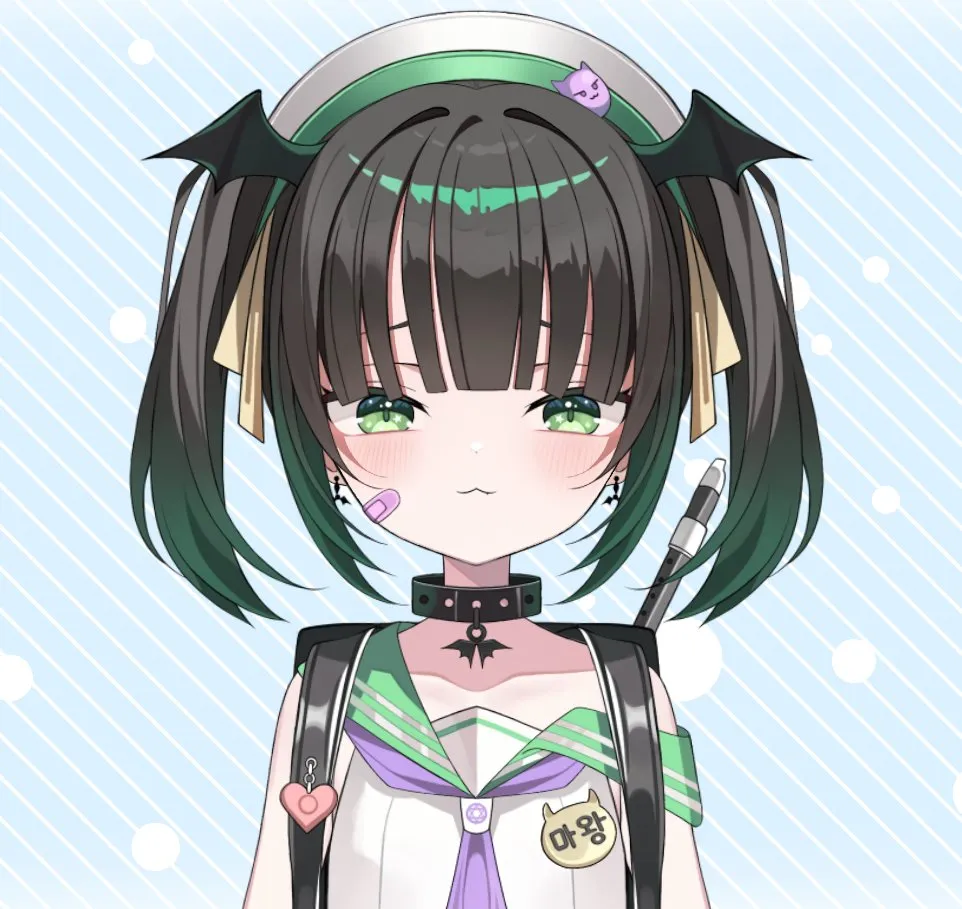

계속되는 활동과 팬의 참여
라이브 서비스, VTuber, 그리고 '오시카츠' 경제 (2020s)
실시간 스토리 전개
시즌 이벤트 업데이트
영속적인 캐릭터 관계
1. 모바일 게임:
끝나지 않는 관계
라이브 서비스와 서사 누적
일상과의 동기화:
완결 대신 주기적인 이벤트와 스토리 업데이트로 캐릭터와 일상을 공유.
집단적 실시간성:
전 세계 팬덤이 동시에 픽업과 스토리를 소비하며 감정적 유대를 축적.

2. 버추얼 유튜버 (VTuber):
실시간 상호작용의 역사화
캐릭터 · 라이브 방송 · 슈퍼챗
즉흥적 서사:
대본이 아닌 방송 중 발생하는 우발적 사건과 채팅 소통이 곧 캐릭터의
역사
로 축적.
경계의 융합:
2D/3D 캐릭터와 실시간 인간성의 결합으로 독자적인 엔터테인먼트 장르 확립.
굿즈 & 팝업스토어
팬덤 라이프스타일
4조 엔 규모 시장
3. '오시카츠(推し活)' 경제:
덕질의 대중화
지지와 응원의 소비 생태계
보편적 라이프스타일:
최애(推し)를 향한 소비가 음지를 벗어나 일상의 정체성 표현 수단으로 정착.
거대 소비 동력:
단순 작품 구매를 넘어 참여형 이벤트, 응원 소비가 맞물린 대규모 경제권 형성.